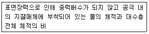
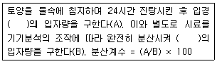
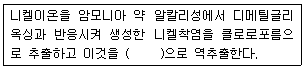
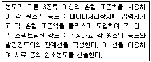
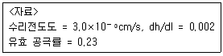
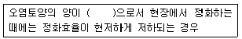
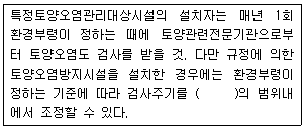

토양환경기사 (2007-09-02 기출문제)
1과목: 토양학개론
1. 토양오염의 특징과 가장 거리가 먼 것은?
- 오염경로의 다양성
- 피해발현의 급진성
- 오염영향의 국지성
- 오염의 비 인지성 및 타환경인자와의 영향관계의 모호성
(정답률: 알수없음)

2. 토양에 흔한 다음 이온들의 교환효율의 크기를 순서대로 바르게 나열한 것은?
- Ca2+＞Mg2+＞K+＞Na+
- Mg2+＞Ca2+＞K+＞Na+
- Ca2+＞Mg2+＞Na+＞K+
- Mg2+＞Ca2+＞Na+＞K+
(정답률: 알수없음)
3. 토양구성 입자의 직경 즉 입도분포 결정을 위한 체분석시 활용되는 곡률계수(Cz)의 정의로 맞는 것은? (단, D10, D30, D60는 각각 체를 통과한 흙의 누적백분율인 통과백분율 10%, 30%, 60%에 해당되는 직경이다.)
- Cz=[D30/(D60×D10)2]
- Cz=[D60/(D30×D10)2]
- Cz=[D302/(D60×D10)]
- Cz=[D602/(D30×D10)]
(정답률: 알수없음)
4. 토양층위 중 성토층의 제일 윗부분에 위치하고 가후나 식생 등의 영향을 받아 가용성염기류가 용탈되며 경우에 따라서는 점토나 부식과 같은 교질물도 아래로 이동하게 되는 용탈층이라고도 하는 것은?
- O층
- R층
- A층
- B층
(정답률: 알수없음)
5. 토양의 용적비중이 1.17이고, 입자 비중이 2.55일 때 도양의 공극률은?
- 약 41.1%
- 약 44.1%
- 약 51.1%
- 약 54.1%
(정답률: 알수없음)
6. 토양수분장력은 pF로 나타낼 수 있다. pF 4의 수분에 대한 설명으로 알맞은 것은?
- 약 0.01 기압으로 결합되어 있는 수분을 나타낸다.
- 약 0.1 기압으로 결합되어 있는 수분을 나타낸다.
- 약 1.0 기압으로 결합되어 있는 수분을 나타낸다.
- 약 10 기압으로 결합되어 있는 수분을 나타낸다.
(정답률: 알수없음)
7. 토양 중의 유기물 함량(중량비)은 대략 어느 정도의 범위로 존재하는가?
- 0.0⑤~0.⑤% 정도
- 0.⑤~0.5% 정도
- 1.0~7.0% 정도
- 15~25% 정도
(정답률: 알수없음)
8. 세계 토양목의 구분중 ‘앤도졸(Andosol)'에 관한 설명으로 가장 알맞은 것은?
- 미발달 토양
- 유기질 늪지 토양
- 건조지역의 토양
- 화산재 토양
(정답률: 알수없음)
9. 다음의 설명은 포화대의 수리지질학적인 특성인 지하수저유특성을 나타내는 어떤 인자에 관한 설명인가?

- 배수공극률
- 비저류율
- 유효공극율
- 비보유율
(정답률: 알수없음)
10. 소성지수는 토양의 액성한계와 소성한계의 차를 나타내는 지수이다. 점토함량이 같은 경우 소성지수가 큰 순서대로 알맞게 나열된 것은?
- 카올리나이트＞일라이트＞몬모릴나이트＞핼로이사이트
- 일라이트＞몬모릴나이트＞카올리나이트＞핼로이사이트
- 몬모릴로나이트＞일라이트＞핼로이사이트＞카올리나이트
- 핼로이사이트＞카올리나이트＞몬모릴나이트＞일라이트
(정답률: 알수없음)
11. 다음은 Puri 분산계수에 관한 설명이다. ( )안에 알맞은 내용은?

- 0.2 mm 이하
- 0.02 mm 이하
- 0.002 mm 이하
- 0.0002 mm 이하
(정답률: 알수없음)
12. 토양오염도 조사시 2단계 부지환경평가 내용과 가장 거리가 먼 것은? (단, ESA 기준)
- 작업계획 수립
- 대상부지의 서류 검토
- 조사활동
- 자료 평가
(정답률: 알수없음)
13. 다음 중 점오염원과 가장 거리가 먼 것은?
- 지하저장 탱크
- 매립장
- 산성비
- 정화조
(정답률: 알수없음)
14. ‘자유면 대수층에서 지하수면의 단위 상승 혹은 강하에 의해 단위 면적을 통해 자유면 대수층의 저류지하수로부터 유입 혹은 유출되는 물의 부피’를 나타내는 지하수 및 대수층 관련 용어는?
- 수두산출율
- 비저류계수
- 비산출률
- 대수저류계수
(정답률: 알수없음)
15. 중금속으로 오염된 토양에 대한 대책 중 적합하지 않은 것은?
- 석회질 자재를 투여하여 토양의 pH를 높여 중금속을 수산화물로 침전시킴
- 인산비료 투여를 줄여 산성화에 따른 난용성의 인산염 생성을 억제시킴
- 오염된 토양을 깍아 내고 그위에 객토함
- 토양 중 중금속을 특이적으로 흡수, 농축하는 식물을 이용하여 제거함
(정답률: 알수없음)
16. BTEX 중 에틸벤젠에 관한 설명으로 틀린 것은?
- 급성증상으로 목에 자극을 주거나 가슴이 답답하다.
- 흡입에 의한 만성증상으로 인간의 혈관계에 영향을 준다.
- 증기압은 25℃에서 9.53mmHg 정도이다.
- 분자량은 126g/mol이며 휘발유 냄새가 난다.
(정답률: 알수없음)
17. 토양의 염류집적 원인이 되는 경우와 가장 거리가 먼 것은?
- 지하수위의 상승
- 관개수에 의한 염류의 증가
- 배수량의 저하
- 지하수 모관상승의 저하
(정답률: 알수없음)
18. 토양생성작용에서 laterite화 작용으로 인해 상대적으로 증가하는 산화물은?
- 철 및 알루미늄 산화물
- 아연 및 망간 산화물
- 칼슘 및 마그네슘 산화물
- 크롬 및 나트륨 산화물
(정답률: 알수없음)
19. 3층형 광물(2:1형 기본구조=한층의 Al 8면체를 Sl 8면체를 Si 4면체가 양쪽에서 샌드위치처럼 싸서 3층구조를 이룸)을 가진 대표적 점토광물은?
- Kaolinite
- Halloysite
- Montmorillonite
- Chlorite
(정답률: 알수없음)
20. 토양오염물질의 특성을 나타내는 인자와 가장 거리가 먼 것은? (단, 유기오염물질인 경우)
- 옥탄올/물분배계수
- 헨리상수
- 분해상수
- 용해도적
(정답률: 알수없음)
2과목: 토양 및 지하수 오염조사기술
21. 공정시험방법에 제시된 용어에 대한 설명으로 틀린 것은?
- 가스체의 농도는 표준상태(0℃, 760mmHg, 상대습도 0%)로 환산 표시한다.
- 방울수라 함은 20℃에서 정제수 20방울을 적하할 때, 그 부피가 약 1mℓ가 되는 것을 뜻한다.
- 진공(감압)이라 함은 따로 규정이 없는 한 15mmH20 이하를 말한다.
- ‘약’이라 함은 기재된 양에 대하여 ±10% 이상의 차가 있어서는 안된다.
(정답률: 알수없음)
22. 가스크로마토그래피(GC)에 사용되는 검출기 중 유기할로겐 화합물, 니트로화합물 및 유기금속화합물을 선택적으로 검출할 수 있는 것으로 가장 적절한 것은?
- 전자포획형검출기
- 수소불꽃이온화검출기
- 열전도도검출기
- 불꽃광도형검출기
(정답률: 알수없음)
23. 흡광광도법에 의한 니켈의 측정원리에 관한 내용이다. ( )안에 알맞은 내용은?

- 묽은 염산
- 메틸렌글리콜
- 사염화탄소
- 에틸알코올
(정답률: 알수없음)
24. 흡광광도법으로 아연을 정량화할 때 다음 설명 중 옳지 않은 것은?
- 아연이온이 pH 9 정도에서 진콘과 반응하여 청색 킬레이트 화합물을 생성한다.
- 흡광도는 620nm에서 측정한다.
- 2가 망간이 공존하지 않은 경우에는 아스코르빈산나트륨을 넣지 않는다.
- 시료중에 시란화칼륨의 착화합물을 형성하는 중금속 이온이 공존하면 발색시에 혼탁하여 방해를 준다.
(정답률: 알수없음)
25. 다음 보기 중 ICP 발광광도 분석장치를 구성하는 요소와 가장 거리가 먼 것은?
- 고주파전원부
- 시료도입부
- 분광부
- 시료원자화부
(정답률: 알수없음)
26. 석유계 총탄화수소(TPH)의 측정원리에 관한 설명으로 틀린 것은? (단, 토양오염 공정시험방법 기준)
- 유효측정농도는 석유계 총탄화수소로 10mg/kg 이상으로 한다.
- 비등점이 높은 유류에 속하는 재트유, 등유, 경유, 벙커C유, 윤활유, 원유 등의 측정에 적용한다.
- 시료중의 제트유, 등유, 경유, 벙커C유, 윤활유, 원유 등을 디클로로메탄으로 추출, 정제한다.
- 흡수의 노말알켄 표준물질의 피이크 패턴과 시료 피이크 패턴을 비교하여 정량한다.
(정답률: 알수없음)
27. 토양시료 중 BTEX 시료보존에 관한 기준으로 적절한 것은?
- 시험관에 채취된 시료를 즉시 실험할 수 없는 경우에는 0~4℃ 냉암소에서 보존하고 7일 이내 분석에 사용하여야 한다.
- 시험관에 채취된 시료를 즉시 실험할 수 없는 경우에는 0~4℃ 냉암소에서 보존하고 14일 이내 분석에 사용하여야 한다.
- 시험관에 채취된 시료를 즉시 실험할 수 없는 경우에는 질산을 주입하여 pH2 이하에서 보존하고 7일 이내 분석에 사용하여야 한다.
- 시험관에 채취된 시료를 즉시 실험할 수 없는 경우에는 질산을 주입하여 pH2 이하에서 보존하고 14일 이내 분석에 사용하여야 한다.
(정답률: 알수없음)
28. 저장물질이 없는 누출검사대상시설을 비파괴시험법으로 누출검사를 할 경우 사용되는 시험장비 중 초음파 두께 측정기에 관한 기준으로 맞는 것은? (단, 공정시험방법상 기준)
- 정기적으로 교정되고 10분의 1 밀리미터 이상의 분해능을 갖는 것이어야 한다.
- 정기적으로 교정되고 100분의 1 밀리미터 이상의 분해능을 갖는 것이어야 한다.
- 정기적으로 교정되고 1000분의 1 밀리미터 이상의 분해능을 갖는 것이어야 한다.
- 정기적으로 교정되고 10000분의 1 밀리미터 이상의 분해능을 갖는 것이어야 한다.
(정답률: 알수없음)
29. pH 측정법에 관한 설명 중 틀린 것은?
- 조제한 분석용 시료 5g에 증류수 25mℓ을 넣는다.
- 유리전극 및 표준전극을 넣고 60초 이내에 읽는다.
- 토양 현탄액이 모두 가라 않은 후 상동액에 전극을 넣어 측정한다.
- 장기간 방치할 경우 토양용액 중 미생물의 작용으로 pH가 낮아질 수도 있다.
(정답률: 알수없음)
30. 다음은 유도결합플라스마 발광광도법의 정량분석에 대한 설명이다. 무슨 방법에 대한 설명인가?

- 내표준법
- 외표준법
- 표준첨가법
- 검량선법
(정답률: 알수없음)
31. 6가크롬을 원자흡광광도법으로 정량시 철, 니켈 등의 공존물질에 의한 방해 영향이 이 때 넣어 측정하는 시약은? (단, 공기-아세틸렌 불꽃 기준)
- 피라졸론액
- 아스코르빈산
- 황산나트륨
- 수산화나트륨
(정답률: 알수없음)
32. 센티스트로크(cSt)는 무엇의 계량 단위인가?
- 비표면적
- 점도
- 비중
- 표준도
(정답률: 알수없음)
33. 저장물질이 있는 누출검사대상시설의 기상부의 누출검사 시험법인 미감압시험법의 측정방법으로 틀린 것은?
- 시럼을 위한 진공속도는 매분 100mmHg 미만이 되도록 한다.
- 매 5분마다 측정된 압력변화값은 자동으로 기록되도록 한다.
- 누출여부에 대한 추가확인을 위하여 마이크로폰 등 추가적인 도구를 사용할 수 있다.
- 압력 안정화 유지시간 이후부터 매 5분마다 60분 또는 70분 동안의 압력변화를 측정한다.
(정답률: 알수없음)
34. pH 표준액의 pH 값이 20℃에서 가장 낮은 값을 나타내는 표준액은?
- 수산화칼륨 표준액
- 수산염 표준액
- 인산염 표준액
- 분산염 표준액
(정답률: 알수없음)
35. 시료의 수분측정 결과 건조된 증발접시의 무게(W1)는 20.25g, 증발접시와 시료의 무게(W2)는 41.50g, 건조 후 증발접시와 시료의 무게(W3)는 35.50g이었다. 시료의 수분 함량은?
- 22.2%
- 28.2%
- 32.2%
- 38.2%
(정답률: 알수없음)
36. 흡광광도법(디에틸디티오카르바민산은 법)에 의해 측정 되는 중금속은?
- 불소
- 비소
- 납
- 아연
(정답률: 알수없음)
37. 불소표준원액의 농도는 1000μgF-/mL이다. 불소 표준원액 10mL를 정확히 취하여 물을 넣어 정확히 100mL로 했을 때 이 용액의 농도는?
- 1000μgF-/mL
- 100 μgF-/mL
- 10 μgF-/mL
- 1 μgF-/mL
(정답률: 알수없음)
38. 흡광광도법(피리딘-피라졸론법)을 이용하여 CN의 농도를 측정시, 방해물질이 함유되어 있을 경우 전처리를 하여야 한다. 이 때 방해물질별 전처리 방법이 틀린 것은?
- 다량의 유지류 함유시료 : 초산 또는 수산화나트륨 용액으로 pH 6~7로 조절하고 시료의 약 2%에 해당되는 노말헥산 또는 클로로포름을 넣어 짧은 시간동안 흔들어 섞고 수층을 분리하여 시료로 취한다.
- 잔류염소 함유시료 : 잔류염소 20mg당 L-아스코르빈산(10W/V%) 0.6mL를 넣어 제거한다.
- 잔류염소 함유시료 : 잔류염소 20mg당 아비산나트윰용액(10W/V%) 0.7mL를 넣어 제거한다.
- 황화합물 함유시료 : 질산나트륨(10W/V%) 2mL를 넣어 제거한다.
(정답률: 알수없음)
39. 유기인을 가스크로마토그래프법으로 정량시 정제용 칼럼으로 사용할 수 없는 것은?
- 규산칼럼
- 이온교환수지칼럼
- 플로리실칼럼
- 활성탄칼럼
(정답률: 알수없음)
40. 다음 중 이온전극법으로 측정할 수 있는 토양오염물질은? (단, 공정시험방법 기준)
- 불소
- 카드뮴
- 페놀류
- 유기인
(정답률: 알수없음)
3과목: 토양 및 지하수 오염정화 기술
41. 토양증기추출기법(soil vapor extraction) 시스템의 단점으로 틀린 것은?
- 토양층이 치밀하여 기체 흐름이 어려운 곳에서는 사용이 곤란하다.
- 오염물질의 독성은 변화가 없다.
- 굴착공정으로 인하여 설치기간이 비교적 길다.
- 지반구조의 복잡성으로 총 처리시간을 예측하기가 어렵다.
(정답률: 알수없음)
42. 다음 중 토양세척공정에 관한 설명으로 틀린 것은?
- 적용시 pH의 영향을 고려해야 한다.
- 토양성분 중 미세토양의 비율이 높은 경우에 적용한다.
- 세척 후 발생하는 처리수의 처리를 고려해야 한다.
- 오염물질의 물리화학적 특징 중 세척효율을 높일 수 있는 요인으로는 수용성과 휘발성이다.
(정답률: 알수없음)
43. 페놀로 오염된 지하수를 과산화수소(H2O2)와 철촉매(Fe2+)를 사용하여 동시에 처리하고자 한다. 예비실험결과 99% 제거시 각각 과산화수소와 철의 필요량이 2.5(g H2O2/g phenol), 0.⑤(mg Fe2+/mg H2O2)임을 알았다. 오염현장의 페놀의 오염농도가 6000mg/L 이고 추출된 지하수의 유량이 10000L/day 일 때 필요한 철촉매(Fe2+)의 양은? (단, 비중 1.0 페놀 제거율 99% 기준임)
- 15.5 kg/day
- 12.5 kg/day
- 7.5 kg/day
- 5.5 kg/day
(정답률: 알수없음)
44. 바이오벤팅(Bioventing)기법 적용시의 영향인자에 관한 설명과 가장 거리가 먼 것은?
- 오염물질특성 : 적용되는 오염물질은 휘발성 및 생분해성을 가지고 있어야 한다.
- 토양의 투수성 : 공기를 토양 내에 강제 순환시킬 때 매우 중요한 영향 인자이다.
- 오염부지의 지표면적 및 깊이 : 토양의 생분해도 측정에 매우 중요한 요소이다.
- 토양 함수율 : 공기흐름 속도는 공기가 채워진 토양 공극률에 비례한다.
(정답률: 알수없음)
45. TCE로 오염된 지하수를 양수하여 폭기조 내에서 공기분산법으로 제거하는 경우, 폭기조의 부피가 500m3인 처리장에 1일 3000m3의 오염 지하수가 유입된다면 폭기 시간은?
- 4시간
- 6시간
- 8시간
- 10시간
(정답률: 알수없음)
46. 지하수면 아래 대수층이 TCE 오염운에 의해 오염되었다. 오염 대수층의 체적은 10000m3이고 매질의 공극률이 0.3 이며, 오염운내 지하수의 평균 TCE 농도가 1.0 mg/L 이라면, 오염운의 지하수내에 존재하는 TCE 총량은?
- 1.5kg
- 3.0kg
- 7.0kg
- 9.0kg
(정답률: 알수없음)
47. 다음 중 식물정화법의 장점이라 볼 수 없는 것은?
- 비용이 적게 든다.
- 다양한 오염물질에 적용 가능하다.
- 다른 방법에 비해 효과가 빠르다.
- 넓은 부지의 오염지역에 적용이 가능하다.
(정답률: 알수없음)
48. 토양증기추출법으로 오염토양을 복원하는 경우, 단일 추출정으로부터 배출되는 가솔린의 평균농도가 추출공기 1.0L당 0.5mg이고, 하루에 100m3의 공기가 추출된다. 오염토양 내에 누출된 가솔린의 총량이 5kg이고, 누출된 가솔린이 모두 증기추출로만 제거된다고 가정한다고 하면 오염 가솔린을 모두 제거하는데 걸리는 시간은?
- 50일
- 100일
- 150일
- 200일
(정답률: 알수없음)
49. 오염토양의 불용화를 위한 화학적 처리방법에 대한 설명으로 알맞지 않은 것은?
- 황화나트륨을 토양 중의 카드뮴화합물에 첨가하여 황화카드뮴을 생성한다.
- 토양 중의 비소화합물은 염화철(Ⅱ)을 첨가하여 비소산을 생성시킨다.
- 토양 중의 수용성 수은화합물은 황화나트륨을 첨가하여 황화수은을 생성시킨다.
- 토양 중의 수용성 납화합물에 염화제일철을 첨가하여 난용성 착염을 형성한다.
(정답률: 알수없음)
50. 오염토양의 열처리 기술 중 열탈착기술에 대한 설명으로 알맞지 않는 것은?
- 열탈착 기술로 처리하는 동안 생성되는 다이옥신류 및 퓨란은 응축 회수가 가능하다.
- 열탈착 기술은 토양으로부터 검출한계 이하로 휘발성 유기화합물의 제거가 가능하다.
- 열탈착공정에서 발생하는 가스는 같은 용량의 소각공정에 비하여 가스량이 상대적으로 적게 발생된다.
- 열탈착 기술은 다양한 수분함량과 오염농도를 가진 여러 종류의 토양에 적용이 가능하다.
(정답률: 알수없음)
51. 동전기 정화시 발생되는 동전기 현상 중 “전기경사에 의한 전하를 띤 화학물질의 이동”으로 정의되는 것은?
- 전기삼투
- 전기영동
- 전기이동
- 전기전동
(정답률: 알수없음)
52. 동전기 정화(electrokinetic remediation)기술에 대한 설명이다. 기술의 원리 및 적용 등에 관한 설명으로 틀린 것은?
- 전기화학, 전기영동, 전기음동 등을 이용하여 지층 내에 오염물질을 제거하는 기술이다.
- 중금속, 핵종, 페놀, TCE, 톨루엔 그리고 기타 유기 및 무기물질의 게거가 가능한 것으로 알려져 있다.
- 지층 속에 전극을 설치한 후 전류를 가하여 오염물질을 이동, 추출ㆍ제거하는 방법이다.
- 이온화 경향이 강한 점성토 지층에 유효하며 사질토 지층에서는 적용이 어렵다.
(정답률: 알수없음)
53. 식물정화법의 대표적 처리 기작에 대한 설명으로 틀린 것은?
- phytodegradation - 식물이 독성물질을 분해하는 효소를 분비하거나 또는 오염물질을 분해하는 데 중요한 역할을 하는 토양미생물에 필요한 영양분을 제공하여 분해활동을 활성화시킴으로써 오염물질을 무독성의 물질로 전환시킴
- phytomobilization - 식물의 뿌리가 오염물질의 이동을 위한 공간을 만들어 토양공기와의 반응성을 향상시켜 처리함
- phytoextraction - 식물조직이 무기오염물질을 체내에 흡수하여 축적함으로써 오염물질을 제거함
- phytostabilization - 금속과 같은 오염물질이 용존상태에서 침전되거나 식물뿌리 또는 주변 토양에 흡착되어 안정화됨
(정답률: 알수없음)
54. 고형화/안정화(S/S)된 폐기물들의 위해성을 평가하기 위한 용출능 평가실험 방법으로 인조ㆍ산성 강우액을 이용하여 물체로부터 연속적으로 오염물을 추출하는 방법은?
- TCLP(toxicity characteristic leaching procedurt) 시험법
- MEP(multiple extraction procedure) 시험법
- EP TOX(extraction procedure toxicity) 시험법
- MWEP(monofill waste extraction procedure) 시험법
(정답률: 알수없음)
55. 매립지에서 염소의 농도가 1000mg/L인 침출수가 누출되어 다음과 같은 특성을 지닌 대수층으로 유입되고 있다. 다음의 자료를 이용하여 산출된 평균선형유속은?

- 1.38 ×10-8m/s
- 3.45 ×10-3m/s
- 2.61 ×10-7m/s
- 1.53 ×10-9m/s
(정답률: 알수없음)
56. 생물학적 산화환원반응의 종류 중 에너지 효율이 가장 좋은 것은?
- 황산염 환원
- 호기성 호흡
- 메탄 발효
- 질산염 환원
(정답률: 알수없음)
57. 6가크롬으로 오염된 토양의 생물학적 복원과정(환원처리조적용)에 대해 잘못 설명한 것은?
- 6가크롬은 물에 용해되기 어려우므로 우선 폭기조로 산화시킨다.
- 영양분과 세균을 환원처리조에 첨가한다.
- 환원처리조에서 세균의 호흡에 의해 산소가 소실되면 6가크롬의 환원이 시작된다.
- 분리조로부터 수산화크롬이 분리된다.
(정답률: 알수없음)
58. 미생물의 종류별 탄소원과 에너지원이 잘못 연결된 것은? (단, 탄소원-에너지원)
- 화학합성 종속영양 : 유기탄소 - 유기물의 산화환원반응
- 화학합성 자가영양 : CO2 - 유기물의 산화환원반응
- 광합성 종속영양 : 유기탄소 - 빛
- 광합성 자가영양 : CO2 - 빛
(정답률: 알수없음)
59. 다음 중 바이오필터의 운전에 따른 문제점으로 맞지 않는 것은?
- 오영물질 분해반응에 따른 pH 저하
- 주기적인 수분공급 필요
- 바이오필터를 통과하는 배가스의 압력손실이 점차 커짐
- 충전충의 교체가 불가능하여 처리가 한계가 있음
(정답률: 알수없음)
60. 어느 지역의 토양 내 TCE가 600g 존재하고 있다. 주어진 조건에 따라 계면활성제 세정공정을 이용하여 모두 정화하고자 할 경우, 필요한 계면활성제의 양은? (단, 계면활성제 내 TCE 용해도 2000mg/L, 계면활성제의 밀도 1.2kg/L)
- 320kg
- 340kg
- 360kg
- 380kg
(정답률: 알수없음)
4과목: 토양 및 지하수 환경관계법규
61. 토양환경보전법에서 사용하는 용어에 대한 정의로 알맞지 않은 것은?
- ‘토양오염’이라 함은 사업 활동 기타 사람의 활동에 따라 토양이 오염되는 것으로서 사람의 건강, 재산이나 환경에 피해를 주는 상태를 말한다.
- ‘토양오염물질’이라 함은 토양오염의 원인이 되는 물질로서 환경부령이 정하는 것을 말한다.
- ‘토양오염관리대상시설’이라 함은 토양오염물질을 생산ㆍ운반ㆍ저장ㆍ취급ㆍ가공 또는 처리함으로써 토양을 오염시킬 우려가 있는 시설ㆍ장치ㆍ건물ㆍ구축물 및 장소 등을 말한다.
- ‘특정토양오염관리대상시설’이라 함은 특정토양오염물질의 누출에 의해 오염의 우려가 현저한 토양오염관리대상시설로서 환경부령이 정하는 것을 말한다.
(정답률: 알수없음)
62. 토양정화업의 등록요건 중 시설(반입정화시설 : 오염토양을 반입하여 정화하는 경우에 한함)기준에 관한 내용으로 맞는 것은?
- 정화시설 200제곱미터 이상, 보관시설 200제곱미터 이상
- 정화시설 400제곱미터 이상, 보관시설 400제곱미터 이상
- 정화시설 600제곱미터 이상, 보관시설 600제곱미터 이상
- 정화시설 800제곱미터 이상, 보관시설 800제곱미터 이상
(정답률: 알수없음)
63. 관할 시장, 군수, 구청장은 규정에 따라 토양관련전문기관으로부터 통보받은 토양오염검사결과를 토대로 정밀한 검사가 필요하다고 인정되는 경우에는 환경부령이 정하는 토양관련전문기관에 토양오염검사를 의뢰할 수 있다. 다음 중 정밀한 검사를 위하여 환경부령이 정한 토양관련전문기관이 아닌 것은?
- 유역환경청
- 시도(특별시, 광역시, 도를 말한다)보건환경연구원
- 지방환경청
- 국립환경과학원
(정답률: 알수없음)
64. 아연의 토양오염우려기준으로 맞는 것은? (단, ‘나’ 지역, 단위는 mg/kg)
- 500
- 600
- 700
- 800
(정답률: 알수없음)
65. 토양오염도검사결과 환경부령이 정하는 기준이상으로 토양이 오염된 사실이 확인되는 때에는 지체없이 토양전문기관으로부터 누출검사를 받아야 하는데 이 누출검사를 받아야 하는 기준으로 맞는 것은? (단, 누출검사 대상시설)
- 토양오염우려기준 중 나지역에 적용되는 기준의 40퍼센트 이상
- 토양오염우려기준 중 가지역에 적용되는 기준의 40퍼센트 이상
- 토양오염대책기준 중 나지역에 적용되는 기준의 40퍼센트 이상
- 토양오염대책기준 중 가지역에 적용되는 기준의 40퍼센트 이상
(정답률: 알수없음)
66. 환경부장관은 토양의 보전을 위하여 10년마다 토양보전에 관한 기본계획을 수립하여 시행하여야 하는데 이 기본계획에 포함되어야 할 사항과 가장 거리가 먼 것은?
- 토양오염의 방지에 관한 사항
- 토양오염의 현황ㆍ진행상황 및 장래예측
- 토양오염평가에 관한 시책 및 관리방향
- 오염토양의 정화 및 복원에 관한 사항
(정답률: 알수없음)
67. 지하수를 생활용수로 이용하는 경우에 있어서 적용되는 수질기준 항목 중에서 일반오염물질이 아닌 항목은?
- 수소이온농도(pH)
- NO3-N(질산성질소)
- SS(부유물질)
- 염소이온
(정답률: 알수없음)
68. 특정토양오염관리대상시설의 종류와 가장 거리가 먼 것은?
- 석유류 저장시설
- 송유관 시설
- 유독물 저장시설
- 방사선물질 저장시설
(정답률: 알수없음)
69. 다음 중 토양오염검사수수료가 가장 비싼 항목은?
- 불소
- 유기인
- 비소
- 수은
(정답률: 알수없음)
70. 토양환경보전법에 의하면 토지의 점유자는 정당한 사유없이 토양 정밀조사를 위하여 그 토지에 출입하거나 그 토지에 있는 장애물을 제거하려는 관계공무원의 행위를 방해 또는 거정하지 못하도록 되어있다. 정당한 사유없이 공무원의 행위를 방해 또는 거정할 자에 대한 과태료 처분 기준은?
- 100만원 이하
- 200만원 이하
- 300만원 이하
- 400만원 이하
(정답률: 알수없음)
71. 특정토양오염관리대상시설의 설치자는 토양관련전문기관으로부터 통보받은 토양오염검사의 결과를 보존하여야 한다. 보존기간 기준은?
- 1년간 보존
- 2년간 보존
- 3년간 보존
- 5년간 보존
(정답률: 알수없음)
72. 오염토양을 정화하는 자가 오염토양에 다른 토양을 섞어서 오염농도를 낮추는 행위를 하였을 경우의 벌칙기준은?
- 1년 이하의 징역 또는 500만원이하의 벌금
- 1년 이하의 징역 또는 1000만원이하의 벌금
- 2년 이하의 징역 또는 1000만원이하의 벌금
- 2년 이하의 징역 또는 2000만원이하의 벌금
(정답률: 알수없음)
73. 다음은 오염토양(토양오염도가 규정에 의한 토양오염우려기준을 넘는 토양)중에 반출정화 대상토양에 대한 내용이다. ( )안에 알맞은 것은?

- 5세제곱미터 미만
- 5세제곱미터 이상
- 50세제곱미터 미만
- 50세제곱미터 이상
(정답률: 알수없음)
74. 토양환경보전법에서 측정망설치계획의 고시기준으로 맞는 것은?
- 최초로 측정망을 설치하게 되는 날 1월전에 하여야 한다.
- 최초로 측정망을 설치하게 되는 날 3월전에 하여야 한다.
- 최초로 측정망설치계획이 확정된 날로부터 1월 이내에 하여야 한다.
- 최초로 측정망설치계획이 확정된 날로부터 3월 이내에 하여야 한다.
(정답률: 알수없음)
75. 토양관련전문기관 또는 토양정화업의 기술인력은 다음의 구분에 따라 국립환경인력개발원장이 개설하는 토양환경관리의 교육과정을 이수하여야 한다. 신규 및 보수 교육규정으로 맞는 것은?
- 신규교육 : 교육대상자가 된 날부터 1년 이내에 24시간
보수교육 : 신규교육을 받은 날을 기준으로 2년마다 35시간 - 신규교육 : 교육대상자가 된 날부터 1년 이내에 35시간
보수교육 : 신규교육을 받은 날을 기준으로 2년마다 24시간 - 신규교육 : 교육대상자가 된 날부터 1년 이내에 24시간
보수교육 : 신규교육을 받은 날을 기준으로 3년마다 35시간 - 신규교육 : 교육대상자가 된 날부터 1년 이내에 35시간
보수교육 : 신규교육을 받은 날을 기준으로 3년마다 24시간
(정답률: 알수없음)
76. 다음은 특정토양오염관리대상시설의 토양오염검사에 관한 내용이다. ( )안에 알맞은 것은?

- 6월
- 1년
- 2년
- 3년
(정답률: 알수없음)
77. 토양보전대책지역 지정표지판에 관한 설명으로 틀린 것은?
- 지정목적을 표기한다.
- 토양보전대책지역 내역(주소, 면적, 약도)을 표기한다.
- 표지판의 규격은 가로 3미터, 세로 2미터, 높이 1.미터 이상으로 하여야 한다.
- 흰색바탕의 표지판에 검정색 페인트를 사용하여 표기 하여야 한다.
(정답률: 알수없음)
78. 지하수를 생활용수로 이용하는 경우, 일반세균의 지하수 수질기준은?
- 1mL 중 100 CFU 이하
- 1mL 중 1000 CFU 이하
- 1mL 중 10000 CFU 이하
- 1mL 중 100000 CFU 이하
(정답률: 알수없음)
79. 다음 지하수 수질기준에 관한 사항 중 맞는 것은?
- 지하수를 음용수로 이용하는 경우는 지하수 생활용수 기준을 적용한다.
- 수질환경보전법상 폐수배출시설을 설치한 사업장에서 사업활동 외에 목적으로 지하수를 이용할 경우 공업용수에 해당하는 하천수질기준이 적용된다.
- 농업용수ㆍ어업용수ㆍ공업용수일지라도 생활용수의 목적으로도 함께 이용되는 경우에는 생활용수의 수질기준을 적용한다.
- 어업용수 및 지하수의 이용목적 상 염소이온의 농도가 인체에 해가 되지 않는 용도로 지하수를 이용하는 경우라도 염소이온의 기준은 적용된다.
(정답률: 알수없음)
80. 토양환경보전법에서 오염지역을 ‘가’와 ‘나’지역으로 구분하는데, 다음 중 ‘가’ 지역에 해당되지 않는 것은?
- 도로용지
- 유원지
- 종교용지
- 사적지
(정답률: 알수없음)